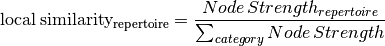

Analysis of immuneREF output¶
Analyzing Similarity Networks¶
Be it a single-layer or multi-layer similarity network, the analysis of the network structure is a central goal of immuneREF. Here, we provide an overview of several approaches to analyze the immuneREF similarity networks, including
- Draw clustered heatmaps for each layer and the condensed network
- Determine network features of similarity layers
- Analyze global similarity score distribution (many-to-many)
- Identify most and least similar repertoires per category via local similarity
- Six-dimensional many-to-one comparison of repertoires to reference repertoires
- Classical repertoire analysis of repertoires based on the immuneREF feature extraction.
A. Heatmaps of similarity layers¶
Representing the similarity layers by a hierarchically clustered Heatmap (R-package ComplexHeatmap [1]) allows easy to interpret analysis of repertoire similarity and category groupings.
###
# Draw heatmap of immuneREF layers
###
# Prepare list of all layers you want to plot heatmaps for (here 6 single layers and 1 condensed layer)
list_all_layers <- list_single_layers
list_all_layers[["Condensed"]] <- cormat
# Prepare list with heatmap annotations containing categories and colors
annotation_list<-list()
annotation_list[["categories"]]<-data.frame(Species=input_data_ref$species,
Receptor = input_data_ref$receptor)
annotation_list[["colors"]]<-list(Species=c(mm='#ffffbf',hs='#fc8d59'),
Receptor=c(ig='#91bfdb'))
# For each entry (immuneREF layer) plot a heatmap (path_figure folder needs to exist already)
print_heatmap_sims(list_similarity_matrices=list_all_layers,
annotation_list=annotation_list,
path_figure="figures")

Visualizing similarity scores across network in a hierarchically clustered heatmap
B. Global similarity scores¶
The global similarity represents the set of all similarity scores (i.e., weighted edges) in a given repertoire similarity network (many-to-many). Global similarity may be analyzed across the entire network (all repertoires) or on subgraphs of repertoires of a given category.
For easier comparability of overall and per category similarity score distribution, immuneREF visualizes the data using violin plots.
# Define how the data should be subset into categories for plotting.
categories_list<-list()
categories_list[["categories"]]<-input_data_ref
categories_list[["color"]]<-c("white",'#91bfdb','#ffffbf')
categories_list[["subset"]]<-"species"
# Plot global similarity
print_global_similarity(list_similarity_matrices=list_all_layers,
categories_list = categories_list,
path_figure="figures")
Comparing similarity scores across network and by species.
C. Local similarity scores¶
To determine how representative single nodes we developed local similarity based on the strength of network nodes. It is calculated by dividing the node strength given node (sum of edge weights of the adjacent edges of a node) by the sum of all node strengths in the subgraph of the category of interest (for example the sum of node strengths of the subgraph of all human repertoires.)

Local similarity gives insight into which repertoires most similar to repertoires of the same condition/species/category. This allows the identification of condition-representative repertoires.
###
# Plot local similarity per category and identify max and min locally similar repertoires
##
max_min_reps<-print_local_similarity(list_similarity_matrices=list_all_layers,
categories_list = categories_list,
path_figure="figures")
Comparing local similarity between species. As the tutorial only analyzes two repertoires per category the local similarity is 0.5 for each repertoire.
D. Many-to-one analysis across 6 features¶
Radar plots enable the visualization of similarity of one, or a group of repertoires to a reference repertoire across 6 features.
###
# Radar plot to visualize similarity across all 6 feature layers
##
radar_list<-list()
radar_list[["category"]]<-c("Murine A","Murine B","Human A","Human B")
radar_list[["roi"]]<-c("mm_ig_h_2_0__0_0_0_A","mm_ig_h_4_0__0_0_0_A","hs_ig_h_2_0__0_0_0_A","hs_ig_h_4_0__0_0_0_A")
radar_list[["label"]]<-c("Murine A","Murine B","Human A","Human B")
radar_list[["colors"]]<-c("grey","blue",'red',"green")
comparison_list<-list(roi=radar_list[["roi"]],
roi_names=radar_list[["category"]],
ref="mm_ig_h_2_0__0_0_0_A",
plot_names=radar_list[["label"]],
colors=radar_list[["colors"]])
print_repertoire_radar(list_similarity_matrices=list_single_layers,
to_compare=comparison_list,
path_figure="figures",
name_plot="tutorial")
Comparing 4 repertoires across six features (Reference repertoire: murine IgH).
E. Classical repertoire analysis on a one-to-one scale¶
The immuneREF function print_repertoire_comparison() outputs a comparison between two repertoires across three classical repertoire features: Amino acid frequency, Germline gene usage and Clonal expansion. The example code below takes advantage of the results of the per-feature analysis saved in the list repertoires_analyzed.
####
# Classical repertoire analysis of maximally and minimally similar repertoires per category
####
#print classic repertoires comparing max and min locally similar plots for:
# simulated human igh repertoires
hs_igh<-list()
hs_igh[["hs_ig_h_2_0__0_0_0_A"]]<-repertoires_analyzed[["hs_ig_h_2_0__0_0_0_A"]]
hs_igh[["hs_ig_h_4_0__0_0_0_A"]]<-repertoires_analyzed[["hs_ig_h_4_0__0_0_0_A"]]
print_repertoire_comparison(list_repertoires=hs_igh,
name_plots="hs_igh",
aa_freq_length=17,
path_figure="figures")
Comparing two human IgH repertoires with respect to Amino acid frequency, VJ (germline gene) usage and Clonal expansion.
Bonus: Network characteristics¶
Additionally, the immuneREF similarity networks may be analyzed with respect to their network features using the analyze_similarity_network() function, which returns a list of network features.
#Calculate Network Characteristics
network_features <- analyze_similarity_network(cormat)